Admin Number: 2130370
Name: Yap Roe Hui Josephine
Project Title: Mood Lamp
This lamp is able to illuminate a room simply by touching the switch. It is also able to change colours in the same way.
- It is able to change colours by touching the switch
- An acrylic design that looks like it is being lit up
| CAD Design, Graphics | Design on the acrylic, Wooden box casing |
| Laser cutting | Acrylic, Wooden box for casing, Acrylic supports |
| 3D Printing | Neopixel mounting, Sensory module case |
| Micro-controller | Arduino UNO/ NANO compatible |
| Input devices | Touch Switch |
| Output devices | 8 unit Neopixel WS2812 string |
| Sn. | Quantity | Item Description | Approx Cost |
|---|---|---|---|
| 1 | 1 | A3 size 3mm plywood | FabLab |
| 2 | 1 | Clear Acrylic | FabLab |
| 3 | 1 | Arduino UNO/ NANO | FabLab |
| 4 | 10 | Jumper Cables | $0.71 |
| 4 | 1 | Touch Sensor | FabLab |
| 5 | 6 | WS2812 RGB Neo Pixels Strip | $1.20 |
| 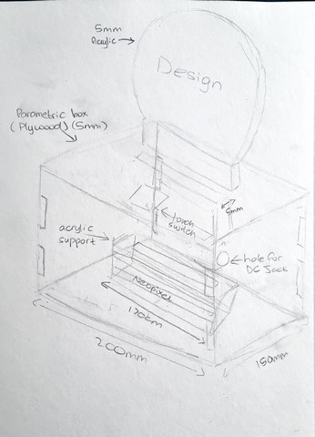 |
This is the sketch that I drew of the project that I wanted to do. I measured my components to ensure that the parametric box I designed was able to hold all of it. |
| 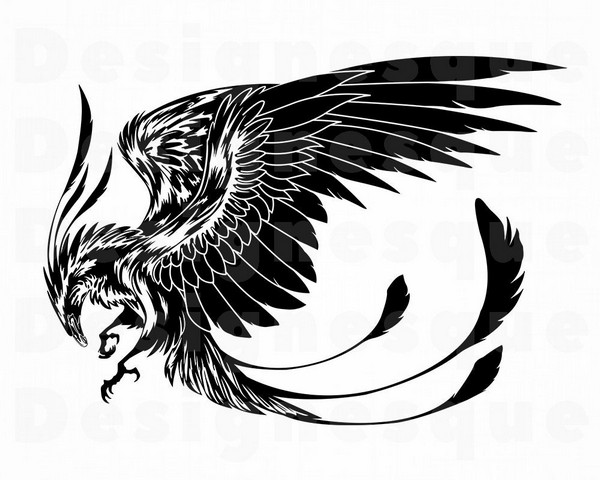 |
Next, I found an image that I thought would look good on the acrylic part of the lamp. I chose this phoenix that I found on google because I thought that it would look nice when it was lit up. |
| 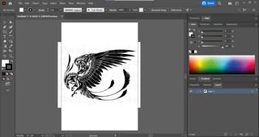 | 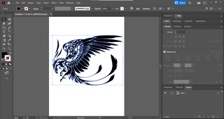 | 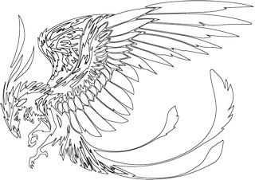 |
| I put the google image into Adobe Illustrator so that I could trace the design. | I used the image trace option to trace the image then I ungrouped the image and made it so that the shapes were not filled in with colour, leaving me with an outline of the image. | Here is the final outline of the image that I will be using for my lamp. |
| 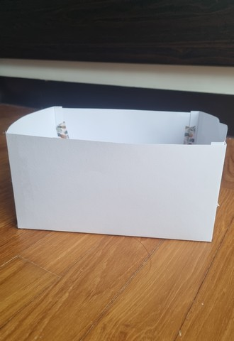 |
Next, I created a paper prototype of the box with the same dimensions as the one in the my original sketch. By doing this, I was able to ensure that all of my components would fit as well as decide if I liked how it looked. I realised that the box looked too wide and was also not long enough so I changed my dimensions. |
|
This is the final box design that I created using Fusion360. The original dimensions of the box from my sketch were 200mm(L) x 150mm(W) x 100mm(H). The new dimensions are 220mm(L) x 130mm(W) x 90mm(H). I had to keep in mind that I would be working with 5mm plywood for the box so I had to ensure that the inside would be able to fit my components. I did this by adding 10mm to the length, width and height of the box. |
| 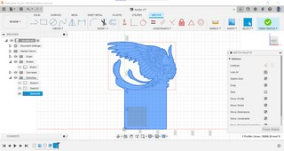 | 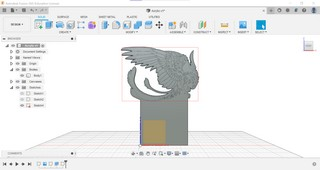 |
| I put the image of my outline on a canvas in fusion 360 and traced it to create the shape of the acrylic as well as added a stand to it with a length of 120mm so that it could fit into the hole on the parametric box which is also 120mm(L) x 5mm(W). | I then extruded the sketch by 5mm to make sure that it looked right. |
| 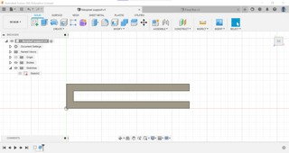 | 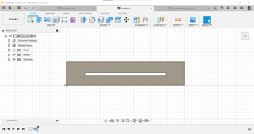 | 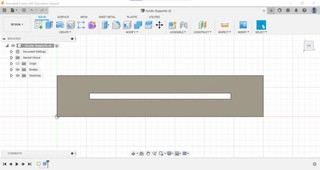 |
| This support is for the nexopixel and is 175mm(L) x 35mm(W) x 5mm(H). The hole is 165mm(L) x 35mm(W). I will be cutting 2 as my neopixel height is more than 5mm. | This support is for the acrylic to rest on so that it does not rest on top of the neopixel. It is 175mm(L) x 35mm(W) x 5mm(H) and the hole is 120mm(L) x 4.5mm(W). I will only be cutting 1. | This support is for the acrylic itself. It is 175mm(L) x 35mm(W) x 5mm(H) and the hole is 120mm(L) x 5mm(W) so that the acrylic can slide in and stay in place. I will cut 4 of them to make sure that the acrylic is fully supported and will not fall. |
| 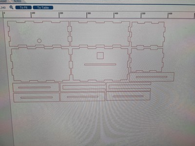 |
I arranged all of the dxf files that I had of the parts I wanted lasercut in 5mm wood in corelDRAW and made it hairline. I made sure that I put all of my pieces relatively close together so that I would not waste material. The settings I used for the cutting were originally Speed: 15%, Power: 85% and Frequency: 60%. I had to continuously change the settings to cut the wood because a lot of the pieces would not cut through fully. |
| 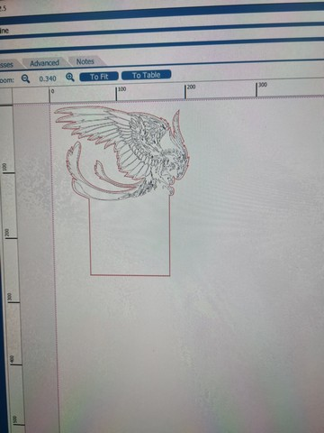 |
Next, I arranged the acrylic design in corelDRAW as well as the image for engraving. I set them to hairline then made the part to cut red and made tha part to engrave black. The dxf file of my acrylic had problems but when I made it into a pdf, it worked wonderfully. The settings I used to cut the 5mm acrylic were Speed: 5%, Power: 80% and Frequency: 80%. The settings that I used to engrave the 5mm acrylic were Speeed: 100% and Power:35%. Some of my acrylic was not fully engraved so I porbably should have increased the power a little bit. |
| 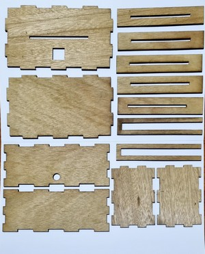 | 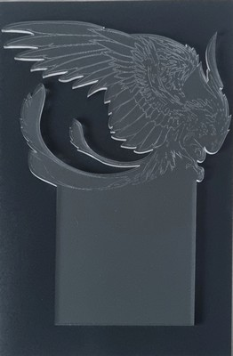 |
| These are all of the pieces that I laser cut with wood. | Here is the acrylic piece that I laser cut and engrave. |
| 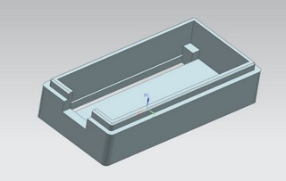 | 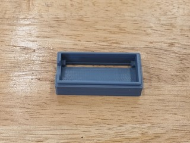 | 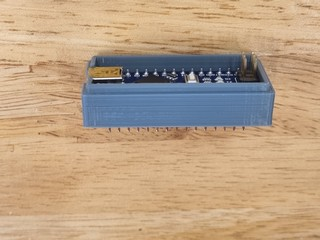 |
| I decided to 3D print a case for my Arduino Nano that i could put on the side of my box so that it did not move around. I chose this design by nspohrer on thingiverse I chose this design because it has access to the pins on the nano which is very useful. You can find the full design and download here. | Here is the bottom of the nano casing all done. I also only printed the bottom piece for ease of access to the nano.It took about 30 minutes to 3D print with 20% infill. | Here is the casing with the Arduino Nano inside it which will be stuck to the side of my parametric box. I was very happy with it because it fit my Arduino Nano perfectly. |
| 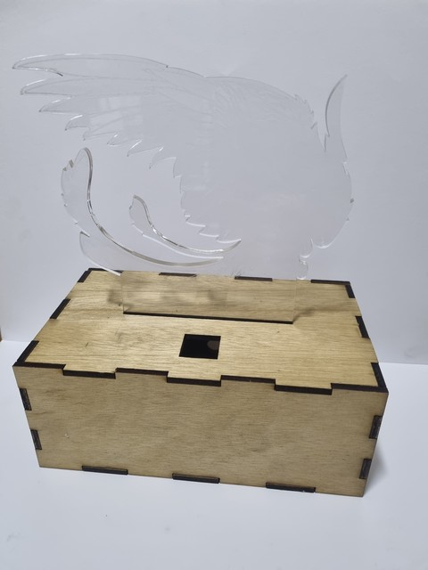 | |
| Here is the how the lamp will look on the outside. I quickly put it together without glue first to make sure that everything fit into place. | Here is what will be inside the lamp. It is a neopixel that changes between 8 different colours (red, orange, yellow, green, cyan, blue, purple and pink) and has two different rainbow cyclers at the end. To change the modes, all you have to do is touch the touch switch. |
| 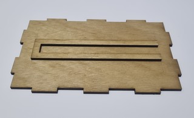 | 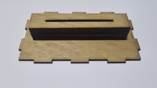 | 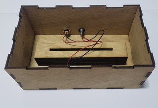 |
| First, I measured the base as well as the wooden support piece so that I knew where the middle was to stick my support to the base piece. | Next, I started to glue all of the support pieces on top of one another, making sure that they were aligned nicely. | Then, I stuck together the walls of my box. The back wall of my box included the 5v dc power jack and power switch which I had to solder. |
| 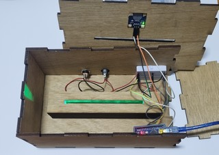 | 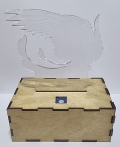 |
| Next, I attached the rest of my circuit to the power jack and switch. This included my arduino nano, neopixel, breadboard and touch switch. | Lastly, I put the top of the box on and inserted the acrylic piece that I cut out and engraved. |
Here is the link to the video